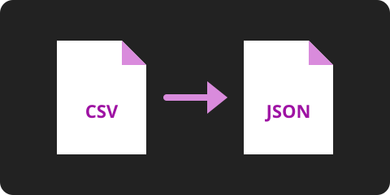

Freevertio: conversor de arquivos
Converta imagens e arquivos de dados direto no navegador, sem enviar nada para um servidor. Formatos que o navegador não alcança podem ser convertidos no servidor, com a sua autorização.
Conversor
No navegador: JPG, PNG, WEBP, CSV, JSON e TXT. No servidor: PDF e documentos do Office.
O servidor não está respondendo. A conversão no navegador continua funcionando; os formatos que dependem do servidor ficam indisponíveis.
Arquivo detectado:
Formato detectado:
Convertendo…
Sua biblioteca de arquivos
Crie uma conta para guardar os arquivos que converteu e baixá-los de novo quando quiser. Converter continua não exigindo cadastro.
